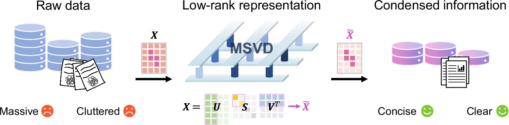

Compute-in-Memory & Brain-Computer Interfaces
Developing energy-efficient computing systems for scientific computing, artificial intelligence, and healthcare
About Me
I am an Assistant Professor at the Institute of Data and Information, Tsinghua Shenzhen International Graduate School (SIGS), Tsinghua University. I joined Tsinghua SIGS in September 2026. Previously, I was a Research Assistant Professor at the University of Hong Kong. I received my Ph.D. from Tsinghua University in 2023 and my B.E. from the University of Electronic Science and Technology of China in 2018.
My research focuses on compute-in-memory (CIM) chips and brain-computer interfaces (BCIs), with an emphasis on memristor-based computing. I explore chip design and algorithm-hardware co-design for energy-efficient scientific computing, AI acceleration, biomedical signal processing, and intelligent healthcare.
Academic Highlights
- Published in Nature Electronics, Nature Communications, Science Advances, IEDM, DAC, and other leading journals and conferences
- PI of projects funded by NSFC and Hong Kong RGC
Selected Awards
- Forbes 30 Under 30 Asia (Healthcare & Science), 2026
- HUANAO China BCI Prize Rising Star Award, 2025
- Falling Walls Science Breakthrough of the Year, Shortlist (Engineering & Technology), 2025
- China Top 10 Semiconductor Research Achievements, 2025
- China Society of Image and Graphics (CSIG) Outstanding Doctoral Dissertation Award, 2025
- China Major Science, Technology and Engineering Advancements, 2020
Professional Services
- TPC member: ICCAD (2023-2026), ASPDAC (2025-2027), DATE(2027)
- Editorial Board: Scientific Reports (Springer Nature), IET Circuits, Devices & Systems (Wiley), BPEX (IOP Publishing), BMEF (a Science partner journal, junior), AI for Science (IOP Publishing, junior), etc.
- Reviewer: Nature Electronics, Nature Communications, Science Advances, etc.
Recent News
Join Our Research Group at Tsinghua SIGS / 清华 SIGS 课题组招生
Our research group at Tsinghua Shenzhen International Graduate School focuses on compute-in-memory chips, brain-computer interfaces, and energy-efficient computing for scientific and AI applications. We are actively recruiting self-motivated Ph.D. students, Master's students, research assistants, and undergraduate interns.
-
Ph.D. / Master's Students
We welcome applicants with backgrounds in electrical engineering, computer science, microelectronics, or neuroscience. Research topics include compute-in-memory chip design, memristor-based scientific computing, brain-computer interfaces, AI acceleration, and AI for healthcare. -
Research Assistants / Undergraduate Interns
(Available Now · Remote OK)
We welcome undergraduates and recent graduates looking to gain research experience. Outstanding research assistants and interns will receive support in applying for graduate programs.
-
博士 / 硕士研究生
欢迎电子工程、计算机科学、微电子、神经科学等 相关背景的同学申请。 研究方向以存算一体芯片与脑机接口为核心， 涵盖忆阻器科学计算、AI 加速、 生物医学信号处理及智能医疗等。 -
研究助理 / 本科实习生
（即日起 · 支持远程）
欢迎有科研热情的本科生及应届毕业生申请， 参与课题研究、积累科研经验。 表现优异者将获得研究生申请支持与推荐。
📧 Please email your CV and research interests to
liuzw@sz.tsinghua.edu.cn
Featured Research

Memristive singular value decomposition

Privacy-preserving data analysis using a memristor chip with colocated authentication and processing

A memristor-based adaptive neuromorphic decoder for brain–computer interfaces

Memristor-based adaptive analog-to-digital conversion for efficient and accurate compute-in-memory

Energy-efficient high-fidelity image reconstruction with memristor arrays for medical diagnosis

Neural signal analysis with memristor arrays towards high-efficiency brain-machine interfaces

Multichannel parallel processing of neural signals in memristor arrays
† Equal contribution. * Corresponding author.
(Last updated in September 2026)